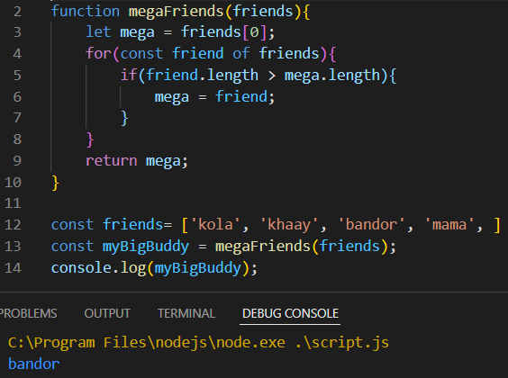
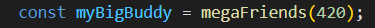
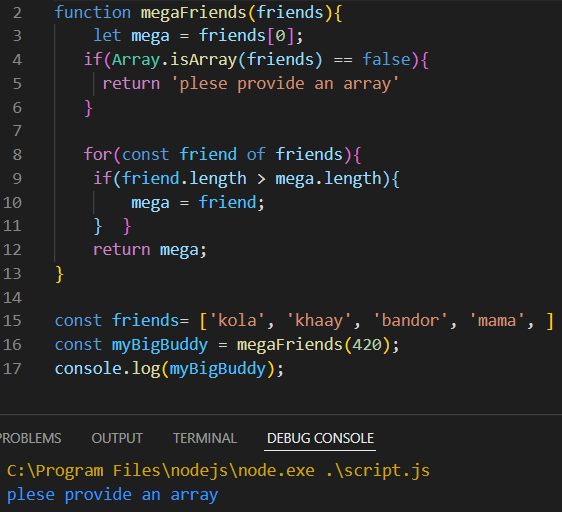
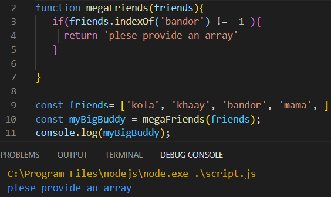
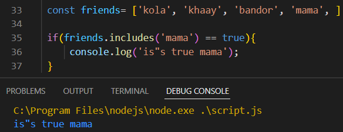

এখন কেউ যদি perameter হিসাবে array ছাড়া অন্য কিছু দেয় তবে ।
জেমনঃ-
 তবে সেটা চেক করার জন্য isArray এর ব্যেবহার করতে হবে ।
সে জন্য নিছের মত করে condition (Array.isArray(xyz)) দিয়ে check করতে হবে ।

নিছের condition এর সাহায্যে কোন নির্দিষ্ট element , array এর মধ্যে আছে কিনা সেটা চেক করা যায় ।

নিচের condition এর সাহায্যেও কোন নির্দিষ্ট element কোন array এর মধ্যে আছে কিনা সেটা চেক করা যায় ।
